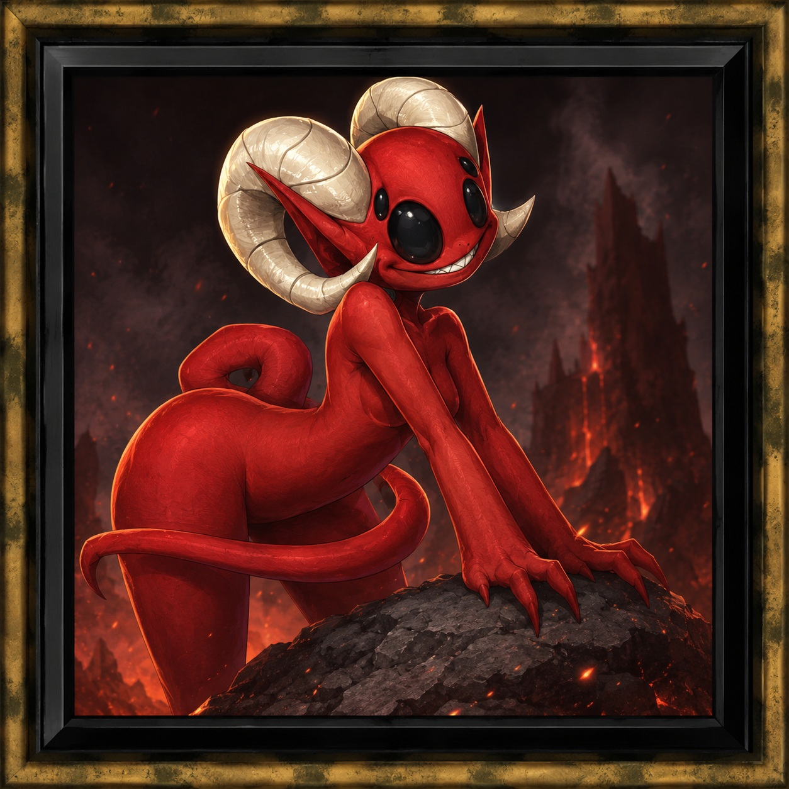
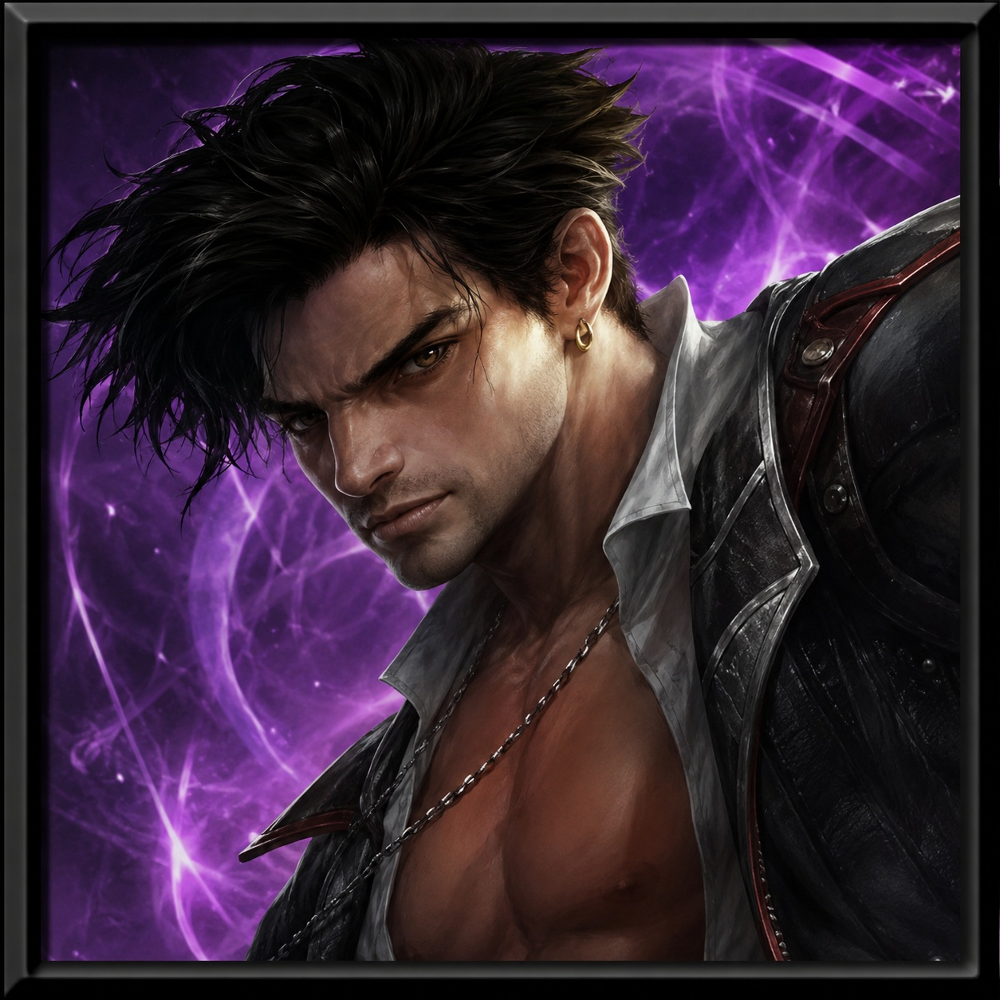

Red
Red is a campaign companion of Cap'n Ravenborne.
"She would rather adventure with Ravenborne than be promoted. She believes she belongs with him."
Companion Red Raven Imp RavenborneCompanion Discovery
Red first entered the story as one of two ravens watching the Low Lantern on behalf of the Vanthampurs. One of those ravens became Red: a shapechanging imp who saw opportunity in Ravenborne and the adventurers opposing the Vanthampurs.
Red was not remembered because she was powerful. She was remembered because she stayed. Across later remembrances of Ravenborne, Red increasingly became part of how he was remembered.
Red is Atlas's first companion discovery centered on a relationship rather than an individual. Her story is inseparable from Ravenborne's, but she is not merely an accessory to him. She chose companionship over promotion.
Discovery Path
Origin
- Began as one of two raven-shaped imps at the Low Lantern.
- One of those ravens began following Ravenborne.
- She earned her place before the reveal by seeming a little too sentient.
Reveal
- Red started following Ravenborne in raven form on May 19, 2020.
- Her true nature was revealed five sessions later, on June 23, 2020.
- The first impression was not “imp,” but “red raven.”
Relationship
- Ravenborne encouraged the raven to land on his shoulder.
- Ravenborne was a pirate without a parrot.
- Red was an imp who could tell these adventurers might stop the Vanthampurs.
- She wanted to impress Ravenborne.
Continuity
- In one telling, Red was killed by Trantolox and that Ravenborne never saw her again.
- In later tellings, Red returned with Ravenborne.
- The Raven Queen remembers Ravenborne differently each time, and lately that remembrance includes Red.
Known Companion

What Red Preserves
- A relationship that began as opportunity and became belonging.
- A companion who respected Ravenborne's presence.
- A survivor who would do whatever it took to endure.
- A recurring memory carried through later versions of Ravenborne.
- The idea that some companions become part of how a character is remembered.
The Soul Before the Raven
Before Red was a raven on Ravenborne's shoulder, Atlas Portal 005.4B preserves the story of Cherrie Raven: a seventeen-year-old thief whose guilt survived the stripping away of mortal memory. After death, Cherrie became a lemure on the shores of the River Styx. When mocked and threatened by imps, the nameless lemure fought back, killed two of them, and was promoted into an imp.
Red does not remember Cherrie Raven. But something remained beneath infernal instinct: survival, ambition, guilt, and the possibility of becoming something unexpected.
Atlas Discovery Status
Phase 2: Complete — campaign evidence established Red as an individualized companion, not a generic imp.
Phase 3: Complete — interpretation centered on relationship, continuity, witness, and survival.
Phase 4: Complete — Atlas Portal 005.4 preserves origin, reveal timeline, death in one telling, and Cherrie Raven backstory.
Phase 5: Complete — Creator Oral History conducted with the DM.
Evidence & Discovery Sources
🟢 VerifiedRed appears in campaign archive evidence as a named imp with linked artwork for Red and Red Raven, and she is associated with Ravenborne-specific campaign assets.
🟢 Atlas Portal
Atlas Portal 005.4 preserves Red's Low Lantern origin, first-following date, reveal date, Trantolox death in one telling, and Cherrie Raven backstory.
🟡 Creator Oral History
DM confirmation established Red is female, first encountered Ravenborne as a red raven, wanted to impress him, and would rather adventure with Ravenborne than be promoted.
🟠 Discovery Note
Red is not universal across all Descent into Avernus campaigns. She is specific to Ravenborne's continuing remembrances and does not appear in Heroes of Their Own Story.